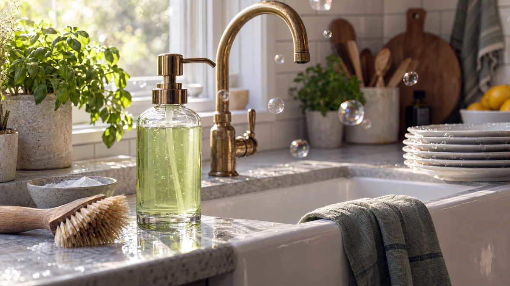

RESTFEST · HUSHÅLL & STÄD
Diskmedel på grön såpa och bikarbonat
En skvätt grön såpa från städskåpet, lite bikarbonat och varmt vatten blandas till ett mjukt, ljusgrönt diskmedel som löser fett utan parfym och färgämnen. I en glasflaska med pump vid diskhon ser det ut som från en designbutik. Kostar några kronor per flaska.
- Förberedelse
- 5 min
- Verkningstid
- under disken
- Räcker till
- ca 4 dl
- Nivå
- Nybörjare
Bra att veta. Märk alltid flaskor och burkar tydligt och förvara dem utom räckhåll för barn. Blanda aldrig hemgjorda rengöringsmedel med klorin eller andra köpta medel, ättika och klorin bildar en giftig gas.
 Det här behöver du
Det här behöver du
Tryck på + vid det du behöver köpa.
Gör så här
- Rör ut bikarbonaten i det varma vattnet tills den har löst sig.
- Häll i såpan och rör försiktigt. Vispa inte, då skummar det över.
- Häll diskmedlet i flaskan med hjälp av tratten och låt svalna.
- Använd 1–2 msk i en diskbalja med varmt vatten, eller några droppar direkt på diskborsten.
- Skölj glas och bestick i rent, varmt vatten efteråt, så blir de inte randiga.
Presentation och användning
- Häll diskmedlet i en glasflaska med pump, och ställ den vid diskhon tillsammans med en diskborste av trä.
- Det fungerar bra på vardagsdisk, kastruller och stekpannor. Låt riktigt flottiga pannor stå i blöt en stund först.
- Grön såpa är lika bra på golv, så samma flaska räcker till en hink skurvatten.
- Använd diskmedlet inom ca en månad och skaka flaskan före användning om det har skiktat sig.
Bra att veta
- Hemmagjort diskmedel skummar mindre än köpt, men skummet säger inget om hur rent det blir.
- Använd det aldrig i diskmaskinen, den fylls med skum.
- Såpa kan torka ut huden. Använd diskhandskar om du diskar mycket.
- Häll inte i citronsaft eller ättika, syra gör att såpan förlorar sin verkan.